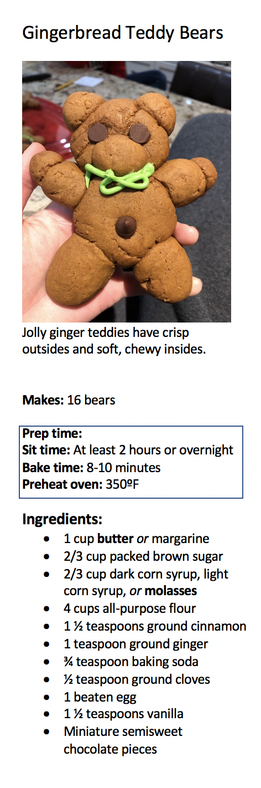
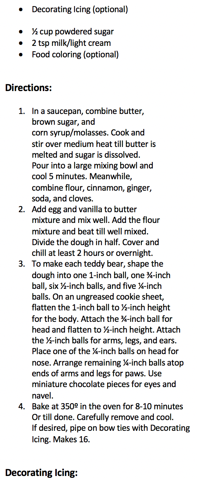
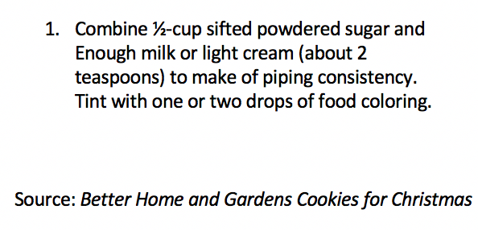

Design Feedback for Kyla
- Add differentiation between sections using lines or boxes.
- Use colored boxes to differentiate particular important areas.
- Consider adding a background (picture/color?)
- Push the text of the icing ingredients to the left and add a space in between to separate from dough ingredients.


